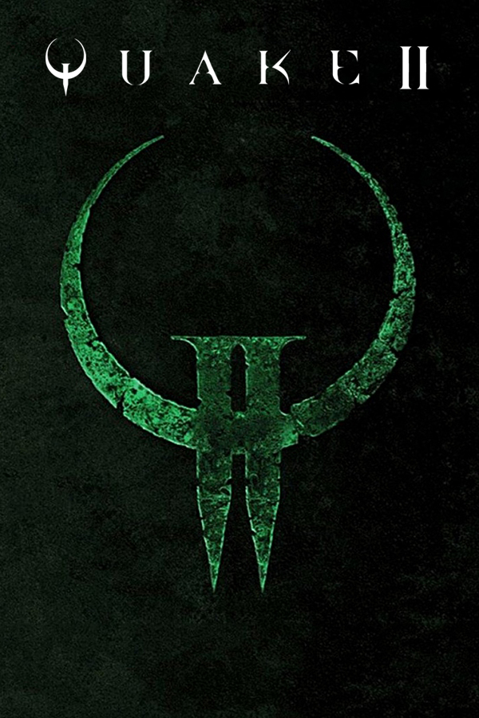

Quake II
Quake II
Detalhes
|  | |
| Tempo de jogo | Não Jogado |
| Última Atividade | Nunca |
| Adicionado | 09/03/2025 22:47:31 |
| Modificado | 10/03/2025 1:04:19 |
| Status de Conclusão | Not Played |
| Biblioteca | Gog |
| Fonte | GOG |
| Plataforma | PC (Windows) |
| Data de Lançamento | 09/12/1997 |
| Pontuação da Comunidade | 83 |
| Avaliação da crítica | 83 |
| Pontuação do Usuário | |
| Gênero | First-person shooter |
| Desenvolvedor | id Software |
| Editor | Activision |
| Funções | Multiplayer Single Player |
| Links | Wikipedia |
| Tag | [EMT] Video Micro missing |
Descrição
Quake II is a 1997 first-person shooter video game developed by id Software and published by Activision. It is the second installment of the Quake series, following Quake.
Developed over the course of a year, Quake II was released on December 9, 1997. In contrast to the first game, which featured a combination of science fiction and fantasy elements, Quake II entirely drops the latter elements and is set during humankind's war against a rogue alien race known as the Strogg, half-mutant half-machine creatures whose homeplanet, Stroggos, is the target of the humans' invasion force. The player takes the role of a space marine (referred to as Bitterman) as he crash-lands on the planet and, being the last survivor of his squad, is tasked with completing a series of missions to cripple the Strogg and end their plans to conquer Earth. The game's storyline is continued in its expansions, including one tying in Quake II and the first game, and Quake 4. The game's heavy metal soundtrack was provided by Sascha Dikiciyan.
Besides its single player component, Quake II also uses a client/server network system similar to that of Quake for multiplayer. Unlike Quake, where hardware acceleration was only implemented through later patches, Quake II was released with native OpenGL support. Quake II was also the first id Software game not to be released for the then-deprecated MS-DOS operating system, rather running natively on Windows 95, with several ports to other systems following afterwards. The source code for Quake II was released by id Software under the GPL license on December 21, 2001.
Quake II received critical acclaim on its release, and similarly to its predecessor is generally considered to be one of the best video games ever made. An "enhanced" version of Quake II developed by Nightdive Studios was released for Nintendo Switch, PlayStation 4, PlayStation 5, Microsoft Windows, Xbox One, Xbox Series X/S on August 10, 2023. It includes the original game and its two expansion packs, an episode consisting of the levels from the Nintendo 64 version of the game, and a brand new episode designed by MachineGames.